チャットで出した (｡•ᴗ•｡) は雰囲気を伝える仮置きの顔文字。 実物は↓のように描かれてアニメする可愛いSVGです(ふよふよ＋まばたき＋キラッ)。
(｡•ᴗ•｡)

※ このプレビューの「きぶん」「色違い」はCSSフィルタで簡易再現。実装版はSVG自体に色・表情を焼き込むので崩れません。 ※ アニメーション(SMIL)はGitHubのREADMEでもそのまま動きます(JSは不可・アニメSVGはOK)。